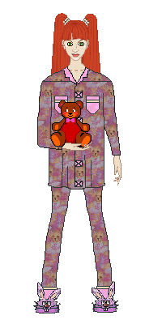

𖣘 Part I 𖣘
Put your hands in water
Focus on the water’s temperature
how it feels on your fingertips, palms, and the backs of your hands.
Does it feel the same in each part of your hand?
Use warm water first, then cold.
Next, try cold water first, then warm.
Does it feel different to switch from cold to warm water versus warm to cold?
𖦹 Part II 𖦹

Listen to your surroundings
Take a few moments to listen to the noises around you.
Do you hear birds?
Dogs barking?
Machinery or traffic?
If you hear people talking,
what are they saying?
Do you recognize the language?
⁂ Part III ⁂
Feel your body
You can do this sitting or standing.
Focus on how your body feels from head to toe,
noticing each part.
Consider:
♫ Part IV ♫
Try the 5-4-3-2-1 method
Working backward from 5,
use your senses to list things you notice around you.
For example, you might start by listing:
Make an effort to notice the little things you might not always pay attention to,
such as the color of the flecks in the carpet
or. the hum of your computer.